Pipeline execution (Logistics)
Push vs Pull
Merge parts - pull

Nikolai Kochetov, Yandex
Nikolai Kochetov
ClickHouse developer
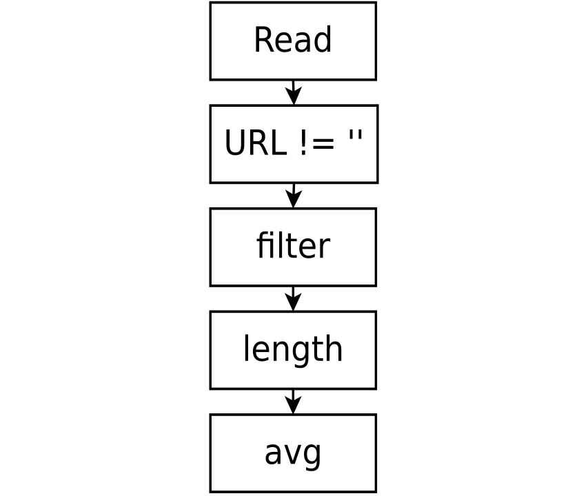
SELECT avg(length(URL)) FROM hits WHERE URL != ''Independent execution steps
URLURL != ''URLlength(URL)avgSELECT avg(length(URL)) FROM hits WHERE URL != ''Chain (tree, graph) of steps with
In-memory execution (LocustDB)
Properties
Row by row execution (MySQL, Postgres)
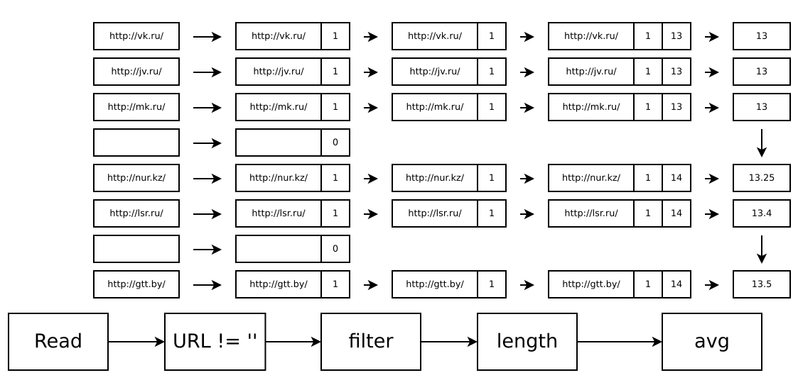
Batch execution (MonetDB, ClickHouse)
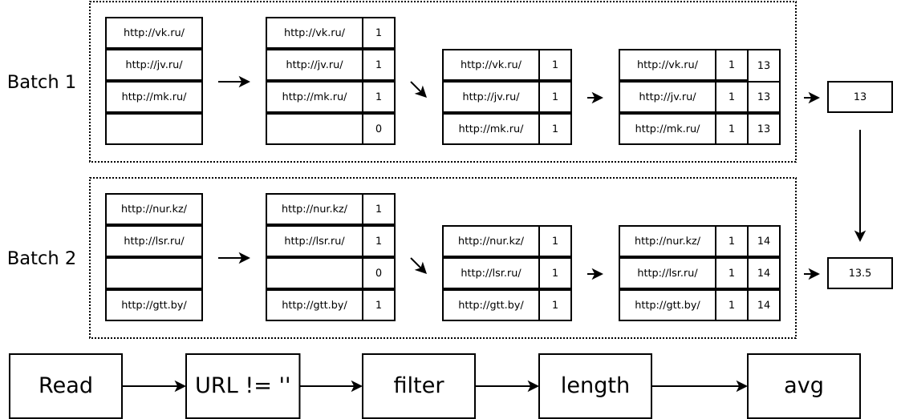
Row by row execution
Batch execution
Push strategy
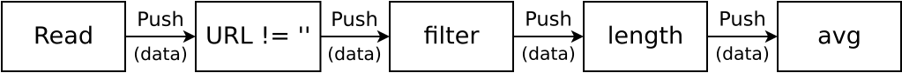
ClickHouse: IBlockOutputStream
Pull strategy
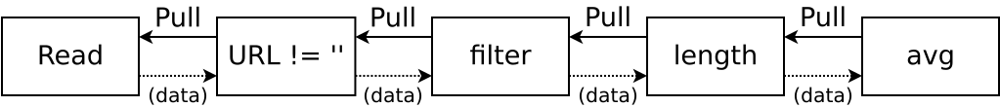
ClickHouse: IBlockInputStream
Push vs Pull
Insert query (into several partitions) - push
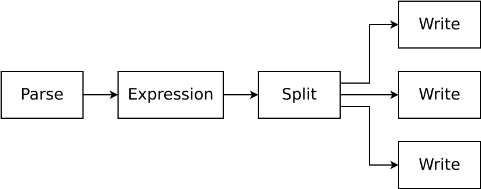
Push vs Pull
Select query (form several parts and order by) - pull
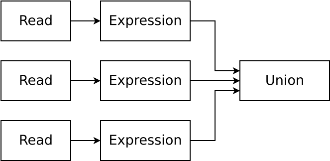
Push vs Pull
Merge parts - pull
Push vs Pull
Insert select: difficult case
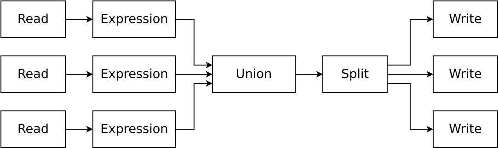
Mixed strategy
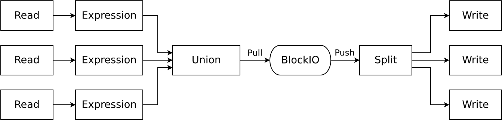
Does current pipeline work well?
Can it work better?
New pipeline (in development)
SET experimental_use_processors = 1
SELECT hex(SHA256(*)) FROM
(
SELECT hex(SHA256(*)) FROM
(
SELECT hex(SHA256(*)) FROM
(
SELECT URL FROM hits ORDER BY URL ASC
)
)
)
10000000 rows in set. Elapsed: 23.227 sec.Use processors pipeline
SET experimental_use_processors = 1
10000000 rows in set. Elapsed: 10.599 sec.Pipeline is a directional graph
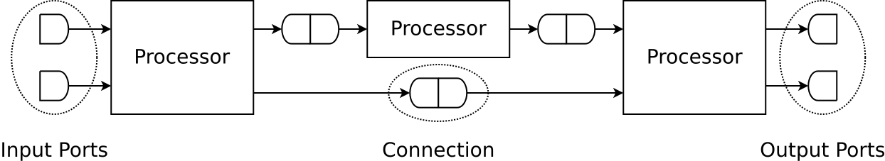
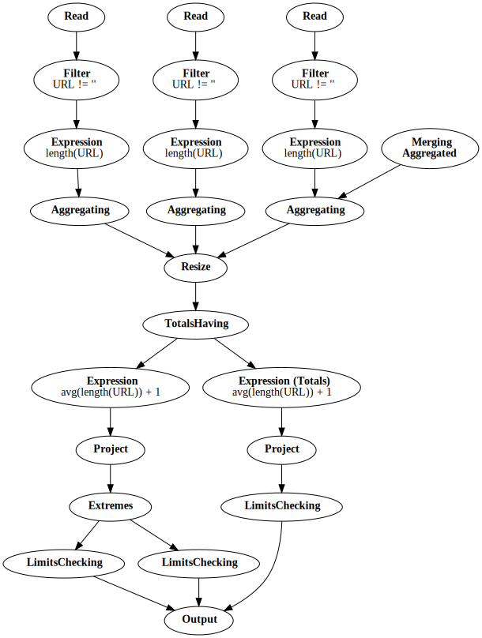
SELECT avg(length(URL)) + 1
FROM hits
WHERE URL != ''
WITH TOTALS
SETTINGS extremes = 1
┌─plus(avg(length(URL)), 1)─┐
│ 85.3475007793562 │
└───────────────────────────┘
Totals:
┌─plus(avg(length(URL)), 1)─┐
│ 85.3475007793562 │
└───────────────────────────┘
Extremes:
┌─plus(avg(length(URL)), 1)─┐
│ 85.3475007793562 │
│ 85.3475007793562 │
└───────────────────────────┘How to execute
Why it works
|
Processors
|
Ports
|

SELECT hex(SHA256(*)) FROM
(
SELECT hex(SHA256(*)) FROM
(
SELECT hex(SHA256(*)) FROM
(
SELECT URL FROM hits ORDER BY URL ASC
)
)
)
10000000 rows in set. Elapsed: 23.227 sec.Use processors pipeline
SET experimental_use_processors = 1
10000000 rows in set. Elapsed: 10.599 sec.How ClickHouse executes queries in parallel?
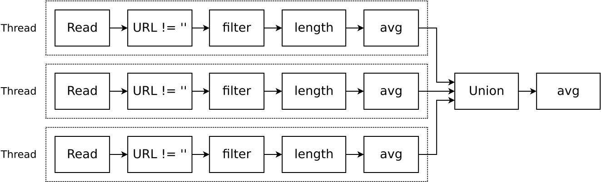
Copy pipeline for each thread
Pull strategy (IBlockInputStream)
Query Pipeline
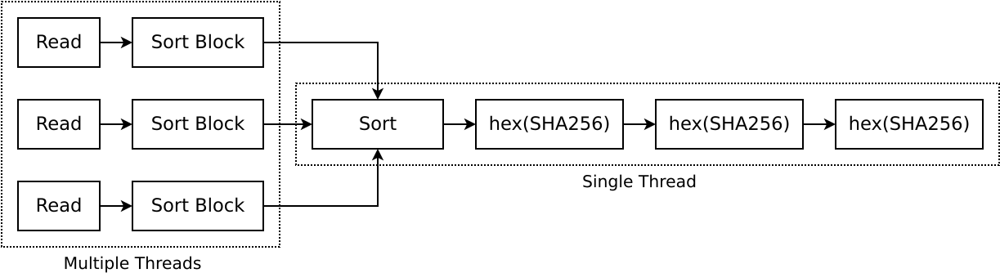
Part of pipeline is executed in single thread
Graph traverse (Processors)
Query Pipeline
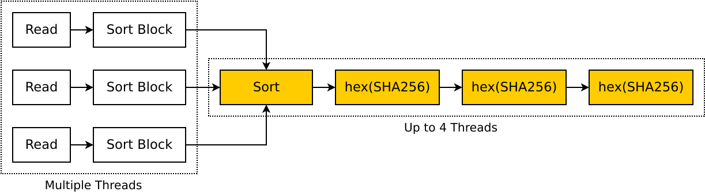
Right chain can be executed in 5 threads (best case)
Sometimes we need to change pipeline during execution
Use previous pipeline as example
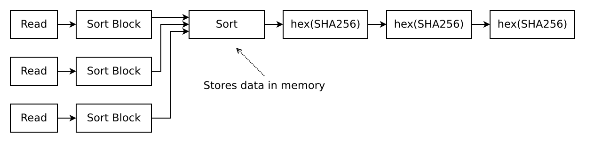
Sort stores all query data in memory
Set max_bytes_before_external_sort = <some limit>
Sometimes we need to change pipeline during execution
Use previous pipeline as example
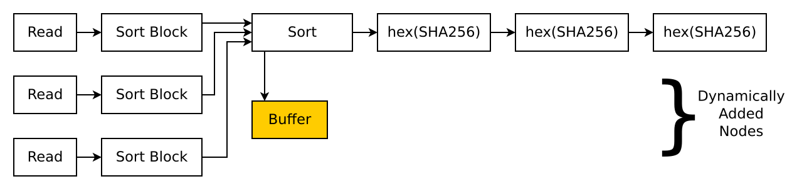
Sort stores all query data in memory
Set max_bytes_before_external_sort = <some limit>
Sometimes we need to change pipeline during execution
Use previous pipeline as example
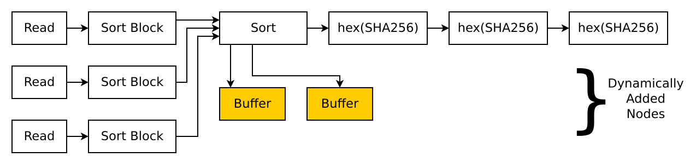
Sort stores all query data in memory
Set max_bytes_before_external_sort = <some limit>
Sometimes we need to change pipeline during execution
Use previous pipeline as example
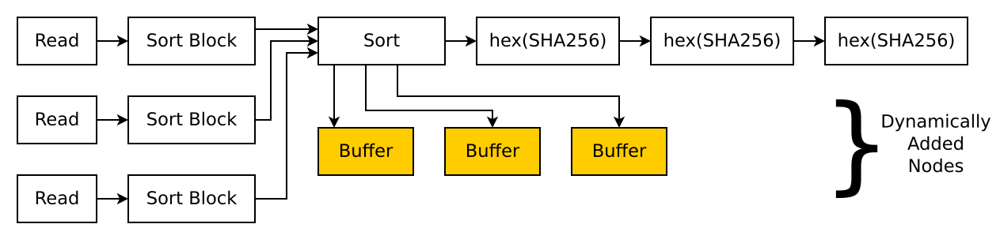
Sort stores all query data in memory
Set max_bytes_before_external_sort = <some limit>
Sometimes we need to change pipeline during execution
Use previous pipeline as example
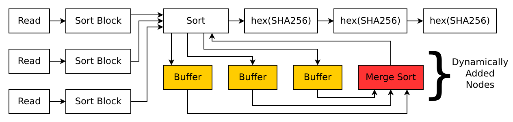
Sort stores all query data in memory
Set max_bytes_before_external_sort = <some limit>
Will print pipeline in Graphviz format
EXPLAIN SELECT avg(length(URL)) FROM hits WHERE URL != ''digraph
{
n140638219161104[label="SourceFromStorage"];
n140638217764624[label="ExpressionTransform"];
n140638219121680[label="FilterTransform"];
n140638217764048[label="ExpressionTransform"];
n140638217755024[label="AggregatingTransform"];
n140638217763856[label="ExpressionTransform"];
n140638219121360[label="LimitsCheckingTransform"];
n140638142287888[label="ConvertingAggregatedToBlocksTransform"];
...
}
select z + 1, y from (select x + 1 as z, y from table) where y > 1AST rewriting approach
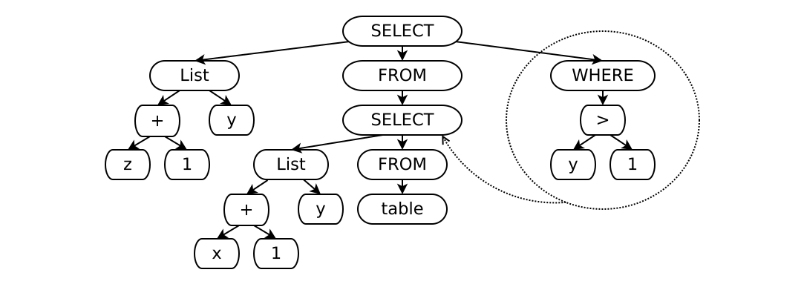
select z + 1, y from (select x + 1 as z, y from table where y > 1)AST rewriting approach
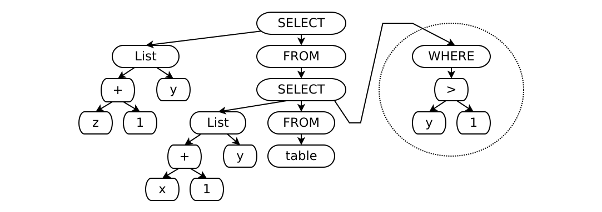
select z + 1, y from (select x + 1 as z, y from table where y > 1)Pipeline optimization approach
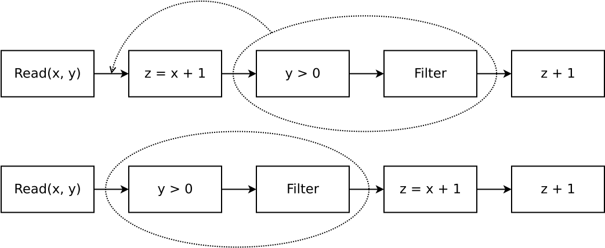
Manage quota for users
Common executor for multiple pipelines
Example set of similar queries
SELECT sum(value) FROM table WHERE foo(x) = 1;
SELECT sum(value) FROM table WHERE foo(x) = 5;
SELECT sum(value) FROM table WHERE foo(x) = 7;It’s possible to make common pipeline for several queries

Idea
Features